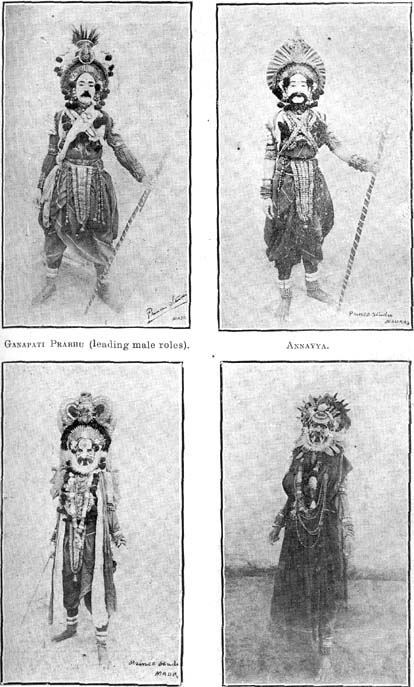
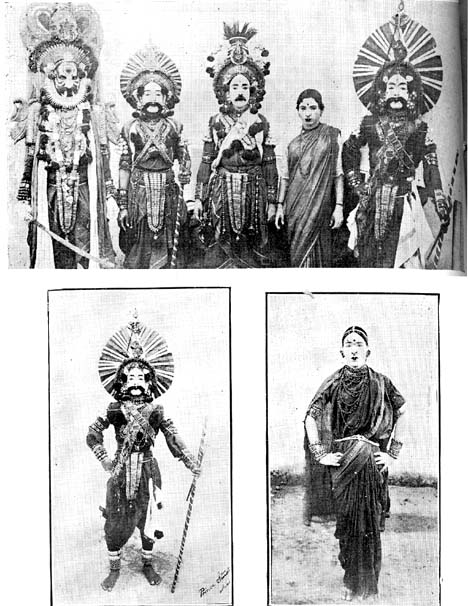

Yaksha Gana
BY V. RAGHAVAN, B.A. (Hons.)
To the vast indigenous theatre of India, the contribution of South Canara is the ‘Yaksha Gana,’ the Kannada cognate of the ‘Kathakali’ of Malabar, the ‘Yaksha Gana’, the street-play, and the ‘Bhagavata-mela-nataka’ of Tamilnadu and Andhra; and outside, of the ‘Lalita’ of Maharashtra, the ‘Bhavai’ of Gujarat and the ‘Yatra’ of Bengal. The origin of these various provincial theatres of the people is not very clear. As we see them now, so far as the South Indian forms at least are concerned, they are completely cast in the mould and technique of the Sanskrit Natya and Sangitasastra. The Sanskrit drama was performed, as can be seen from Bharata’s Natya Sastra, in an operatic manner with the added effects of music, dance, and gesture-representation. This can be seen also from a fortunate survival of the fourth act of Kalidasa’s Vikramorvasiya in certain recensions, which shows us the way in which classic Sanskrit dramas were handled by the artistes of the theatre when they were actually performed. In later times there arose a vast Sanskrit operatic dramatic literature in all parts of India which the Sanskrit dramaturgist would class among the ‘Uparupakas.’ In Mithila there was a crop of such dramas in Sanskrit in one act, and with songs in Prakrit all through. One such piece is the Parijatha-harana-nataka of Poet Umapati who flourished under a king of Tirhut who ruled between A.D. 1304 and 1324.1 The construction of this drama resembles that of the South Indian vernacular musical plays of ‘Yaksha Gana’ or ‘Nataka’ in Tamil, Telugu, and Kannada. The Kashmerian Sanskrit poet Damodaragupta of a very much earlier age, the ninth century, speaks in his work Kuttanimata of a type of drama and of its actors which correspond closely to conditions available in South India.2 Very much later, similar Sanskrit musical plays were produced during the reign of the Telugu and the Mahratta rulers at Tanjore and these plays are preserved in the Tanjore Mss. library. This Sanskrit literature of musical plays is here referred to because the popular Tamil, Telugu, and Kanarese drama called ‘Yaksha Gana’ or ‘Nataka’ is mostly of the same nature.
The Yaksha Gana can be taken to be the common name of an old type of traditional, popular vernacular drama of South India, a name common to the three linguistic areas of Tamil, Telugu, and Kannada and absent only in Malayalam. In subsequent times the name Yaksha Gana gave place to the two names ‘Nataka’ and ‘Vilasa,’ in Tamilnad and Andhra, but it continued in South Canara. In the Madras and Tanjore Mss. libraries there are many Tamil and Telugu Yaksha Ganas, though none of them can be dated beyond the eighteenth century. Of its history in South Canara E. P. Rice says: ‘A class of books very largely in demand consists of stories from the epics and puranas in a new literary form which sprang up in the eighteenth century and is called Yaksha Gana. It is a sort of dramatic composition suitable for recitation before rustic audiences by professional and amateur actors.’3 The Yaksha Gana seems to be named after the form of music employed in it which is said to be originally called ‘Yaksha Gana.’ What this particular kind of music is I have not been able to know, though I asked Kanarese scholars and critics of music about it. I was informed that ‘Yaksha Gana’ is the older type of music and that in course of time later song-forms like ‘Kirtana’ as in the Tamil ‘Natakas’ came to be introduced. Though the name Yaksha Gana is Sanskrit, it is almost absent in the vast Sanskrit literature on ‘Natya’ and ‘Sangita.’ There is a single reference to it in an important Sanskrit music treatise of Tanjore, the Sangita Sudha of Govinda Dikshita written about A. D. 1628, which says that an earlier treatise attributed to Anjaneya has taken into account the type of music sung by the Yakshas (yakshaugha gitam api gana sailim). The Tamil Natya literature having numberless odd names does not mention the word Yaksha Gana, though the Tamil lexicons say that Yakshas are semi-divine beings like Gandharvas and that they are players on the ‘veena.’ It is throwing wide open the floodgates of guess and imagination, if we suppose from this that the Yaksha Gana developed from minstrelsy songs sung to the accompaniment of the ‘veenas.’ As far as the Andhra is concerned, I am informed by Brahmasri Veturi Prabhakara Sastri, Telugu Pandit in the Madras Mss. Library, that round about Guntur there exists a community of people called ‘Yakshas’ or ‘Zakkulu’ devoted to the arts of music and dance, and it is suggested that this drama came to be called after the caste of the people playing it. The Pandit also says that the Yaksha Gana might have developed out of court panegyrics or the glorifying of the deity of the local temple and that the folk-songs ‘Ela’ ‘Jhola,’ (the Tamil ‘Lali’ or ‘Oonjal’ i.e., the swing-song) ‘Dhavala,’ ‘Sobhana,’ ‘Suval’ (the paddy-husker’s song) etc., must have been utilised for the Yaksha Gana. On examination I found a Ms. Tamil Yaksha Gana also to contain ‘Sobhana’ songs. But most available specimens of Tamil and Telugu Yaksha Gana and ‘Nataka’ alike contain only uncharacterised and unnamed songs called generally ‘darus’ in various ‘ragas’ and ‘talas.’ Therefore there is no perceptible difference between an Yaksha Gana and a ‘Nataka,’ both of which are composed in the same style, in ‘padas’ (songs) in various ‘ragas’ and ‘talas,’ in ‘padyas’ (verses) in various metres, and in ‘vachana’ (prose), often short in nature. Mr. Prabhakara Sastri gave me also the only reference to the Yaksha Gana in Telugu works on Poetics. The Appakaviyam written about three hundred years ago says that the ‘Ragada’ metre, when cut at different stops at the end, fits in with different ‘gatis’ and ‘talas’ and that this is utilised for the songs in the Yaksha Gana. The ‘Ragada’ (Kanarese: ‘Ragale’) is huge and long metre having numerous feet from which is derived the popular usage of ‘Ragalai’ as a word meaning ‘tumult.’ This ‘Ragada’ is an old type of musical composition met with under the name Rahadi in the Sangita Ratnakara of Sarngadeva (A. D. 1210-1247.) where it is described as a multi-footed composition suited to ‘Veera rasa,’ Similarly the previously-mentioned songs ‘Ela,’ ‘Dhavala’ etc., are also traceable in earlier Sanskrit music treatises.
There is a strange correspondence to this South Indian name of Yaksha Gana in Nepal where the vernacular drama of a similar nature is called by a very similar name, the ‘Gandharva Gana.’4 There is a Nepalese vernacular operatic dramatic literature in Nepal from the time of King Jagajjyotir-malla of Nepal (A.D. 1617–33.) who himself pioneered in the creation of this literature.
II
The Yaksha Gana belongs to South Canara in the Kannada area, where other forms of Natya like Nautch must have flourished in other places. For it is the Karnataka country that has named our South Indian music and dance as ‘Karnatic.’ In South Canara, the Yaksha Gana is one of the two most widespread popular dramatic entertainments, the other being the puppet-play, called as in Tamil by the name ‘Bommalattam.’ The vernacular name of the Yaksha Gana is ‘Bayal Attam,’ i.e., open-air play, a name which corresponds to the Tamil ‘Terukkoottu’ and the Telugu ‘Veethinataka’ both of which mean street-play. The Yaksha Gana troupes are attached to particular shrines, even as at the villages of Oottukkadu etc., in Tanjore district, where the ‘Bhagavata’ troupes play only at the temples.5 As at the Andhra Kuchipudi and at the above-said Tamil villages, the actors of Yaksha Gana in South Canara are also called ‘Bhagavatars’ and a set and a performance by them is called a ‘Mela.’ Unlike the Tamil ‘Bhagavatars’ referred to, the Yaksha Gana players of South Canara travel from place to place and people even pray to their gods in times of distress that they will order an Yaksha Gana performance as offering. Last year two sets of South Canara Yaksha Gana players, the ‘South Canara Yaksha Gana Dramatic Company’ and the ‘Sri Perudur Anantapadmanabha Swami Dasavataram Company,’ visited Madras and this account of mine of Yaksha Gana is mainly based on the performances they gave in Madras.
III
The themes of all the dramas of Yaksha Gana are fights and warfare, stories of ‘veera’ and ‘raudra’ rasas from our puranic legends. In ‘Girija Kalyana,’ Parvati’s wedding, the love-incident forms but the central event in a long drama beginning with the destruction of Daksha’s sacrifice by the terrific Veerabhadra and ending with the boy-War-God Kumara annihilating demon Taraka and his hordes. ‘Vali-nigraha,’ ‘Draupadi-pratapa,’ ‘Bhishma-Vijaya,’ ‘Virata-parva’ or ‘Keechaka-vadha,.’ ‘Karna-Arjuna-yuddha,’ ‘Atikaya vadha,’ are some of the other plays, all of which are stories of fight and war. In this respect the ‘Yaksha Gana’ differs from the Tamil and Telugu varieties which do not specialise in fights, but resembles the Kathakali of Malabar–which is also ‘Tandavic’ in the main. The actors roar and do robust dances in weird costumes. The drums are beaten loudly and ‘veera’ and ‘raudra’ rasas are portrayed most successfully. The make-up of the Rakshasas and other wild characters is in keeping with this atmosphere. In the play called ‘Draupadi-pratapa,’ it is a very effective, powerful and wonderful scene which forms the climax of the drama at its end. Chandi and Kali appear in terrific attire, roar, and upon a background of war-beats on a drum in the orchestra at the back, they wheel round in a hand-to-hand fight. It shows how well the rasas could be evoked without all the realistic trappings of scenery etc., of the modern stage. Similarly, in the ‘Girija Kalyana,’ the scene in which Siva gets angry, roars, strikes the earth and creates the terrible Veerabadra to destroy Daksha’s sacrifice, is a thrilling show. But ‘Lasya’ is not absent in Yaksha Gana, for a theme has to be of varied interest. There is ‘Lasya’ in ‘Bhishma-Vijaya’ where the princesses bathe, and the ‘Rukmangada’ has some fine playing of ‘Sringara’ or love between King Rukmangada and Mohini. But the prevailing atmosphere is the ‘Arabhati Vritti,’ the forceful manner. Even a play like ‘Rukmangada,’ whose rasa is the quietistic ‘Santa,’ is played in such a manner as to contain mostly fights, and this is done by the introduction of the conquest expeditions (‘Digvijaya’) of the crown prince, who defeats various kings, Asuras and God Yama. The clown has great liberty and he is responsible for too much ex tempore comic speech appearing often. In the themes that are mainly puranic, occasional inventions occur and the ‘Draupadi-pratapa’ is a fine specimen of an imaginative creation spun out of a puranic nucleus. On the whole, they play about fifty dramas: the whole of the ‘Ramayana’ and the ‘Mahabharata’ done episode by episode, as also other plays.
IV

Surely, the Yaksha Gana make-up is as epic as its theme. It is decidedly more graceful, richer and more closely related to the ornamentation found in our sculpture than the Kathakali make-up. The chief male characters, the hero and his son, or the king and his minister or prince, have a fine ‘Makuta,’ and together with other characters belonging to the sublime type called ‘Maha-purusha’ and ‘Dhirodatta,’ have a uniform kind of exalted make-up with ‘Bhujakirti,’ ‘Kataka,’ ‘Virakaccha etc.’ (Fig. 1) The head-dress of the wild characters, the ‘Dhiroddhatas,’ is of a different type, an arch-like head-dress which is prepared then and there on each occasion. (Figs. 2 and 3). The ‘Prati Nayaka’ or the villain, Rakshasas, Asuras and God Yama appear in the most weird dress of the Yaksha Gana. Their ‘Makuta’ is bigger and is of wood studded with glass and somewhat resembles some of the Kathakali head-gears. King Salva in ‘Bhishma-vijaya,’ Mahishasura and Yama in ‘Rukmangada,’ and Ravana in ‘Atikayavadha’ appear in this dress. (Fig. 4). The face is masked; the lip hangs low and red; there are two carnivorous teeth; the nose is enlarged with some white matter; and long locks of hair hanging behind complete this male weird dress.

There is a corresponding female weird dress; Chandi and Kali in ‘Draupadi-pratapa,’ and Surpanakha in ‘Atikayavadha’ appear in it. (Fig. 5). Lion’s teeth, blood-red artificial tongue drawn-out and dangling, huge breasts and lengthy locks of hair at the back characterise this female weird make-up. All the actors wear trousers to enable them to dance and over them a ‘saree’ is tied in the form of a ‘Kaccha’ with girdle ornaments. The faces of kings and princes have a rosy paint; king Bali appears with a green face, Yama with a black one, and Krishna and Vishnu, blue. Hunters appear in some plays like the ‘Rukmangada’ and the ‘Bhishma-vijaya’ and they tie to their bodies some amount of green twigs to suggest that they are forest people; they first make a bonfire and dance round it before their action begins. All royal characters have a bow and arrow in their hands; Vishnu and Krishna bring a ‘chakra’ (disc), and Narada a bunch of peacock feathers. The costume of Narada has been modernised, and along with it that of the women characters also to a very large extent. In the midst of old picturesque make-up, the heroine now appears discordantly dressed up in modern make-up imitative of coquettish society women appearing on the modern stage. The old female make-up was full of old jewellery with ‘Makuta’ or ‘Kirita’ etc. resembling female figures in our sculpture. The make-up includes masks also. In ‘Girija Kalyana,’ Daksha appears after Veerabhadra’s onslaught with a mask of a sheep’s head. I am told that Jatayu, the great eagle appearing in the ‘Ramayana’ is similarly made up with an eagle-mask and huge feathers. Much of their elaborate make-up which they use in the performances in their own plays, the players did not bring to Madras. The colour scheme of the dress cannot be realised by seeing the photographs reproduced here. The dresses are mostly in red colour, dull as well as deep, with a lot of dazzling lace all over.
V
The traditional Sanskrit play and its vernacular representatives begin with some preliminary benedictory music and dance called in Sanskrit ‘purva ranga.’ As detailed by Bharata, not only its more variegated variety called the ‘Chitra-purva-ranga’ but also its more simple form called ‘Suddha-purva-ranga’ was very elaborate. It is well known that the Kathakali of Malabar has its own ‘purva-ranga,’ the ‘Todayam,’ ‘Purappadu,’ ‘Melappadam’ etc. A traditional Yaksha Gana starts something like a Tamil ‘Terukkoottu.’ There is first the worship of God Vighnesvara, the remover of obstacles, within the green room itself, with a song on this God. The ‘Karpura Nirajana’ shown to the God is then ‘taken’ by the actors, the chorist and the drummers. After this ‘Ganapati Prarthana,’ the Chorist Bhagavatar, along with the player on the ‘mridanga,’ comes to the open space outside that enclosed for the green room. He takes his stand at the back end of the space and sings the praise of God Subrahmanya, brother of Ganapati. The next item is the entrance of two boys in typical male costume; they dance while certain ‘vandana’ slokas or benedictory verses from Sanskrit hymns are recited. Then two female characters appear and do some graceful dance (‘Lasya’), first from within the curtain and then outside. They retire and the Bhagavatar (the musician) gives us the ‘Kathapeethika,’ the prologue to the coming story corresponding to the Sanskrit ‘sthapana’ which mentions the drama, opens it and introduces the first characters. The play then begins. Each actor enters dancing, exchanges a few words with a musician, who now and then talks with the actors and makes comments and asks every new character who he is; and the actors thus announce themselves, and whenever a new character entered a scene having other personalities, the habit was, in the days when there was no electric or gas light and the play was played on the paddy field or the street corner with two men standing at the two front ends with a blazing fire brand (‘Tivatti’) in their hands, that the old character on the scene came to one end, caught hold of the hand of the light-keeper, directed the light to the newly entering character, acted the action of one who looked at and turning to the audience showed his awareness of the new arrival. But now, the actors come to one end and identify the new arrivals in the same manner, though the gas light has removed the man with the firebrand.
VI
The Yaksha Gana must have originally been a faithful form of Bharata’s theatre in respect of ‘Abhinaya.’ As was to be seen till recently in Tamil street-plays, ‘Abhinaya’ or ‘Nritya’ must have been present to a large extent in the Yaksha Gana. But now, it has become considerably reduced, chiefly on account of the introduction of speech in an elaborate manner. It is in this respect that it differs from the Kathakali of Malabar and resembles the Tamil variety. In the Tamil play, the whole theme is in the form of songs and verses both of which are sung. There are occasional prose lines which the chorus-like ‘Kattiyakkaran’ speaks, conveying information to the audience about what follows next and giving similar links. In a way the Yaksha Gana as it has developed now, has approached the modern drama in having a lot of prose dialogue which the actors themselves speak. When the actors stop the speech, the musical theme is sung, and while it is sung the ancient practice must have been to render every word of it through ‘Abhinaya’ as in Kathakali and Nautch. Still, there are places in the Yaksha Gana even today which are full of ‘Abhinaya.’ In ‘Bhishma-vijaya,’ King Salva, and in ‘Atikayavadha,’ Ravana enter with elaborate dance, perform ablution, wear holy ashes and worship ‘Sivalinga’–all in ‘Abhinaya.’ Similarly Amba, Ambika, and Ambalika, the three princesses in ‘Bhishma-vijaya,’ do bathing in Ganges in ‘Abhinaya.’ In other places also where there are, unlike the two cases above-mentioned, speeches by actors, there is some amount of ‘Abhinaya’ of the hand. Many actors give suitable ‘hastas’ or ‘mudras’ for the ideas occurring in their speech. I could note the ‘sikhara’ hand, the ‘katakamukha’, the ‘pataka’, the ‘suchi,’ etc., occurring often. The entry of Salva, Ravana etc., and the dumb ‘Abhinaya’ in those instances remind us of Kathakali and give us a glimpse into an earlier stage of the Yaksha Gana when it was rich in ‘Abhinaya.’ If there is no speech, ‘Abhinaya’ will be complete as in the mute Kathakali, but the introduction of speech brought in a steady loss of ‘Abhinaya.’ In an older stage, the actors must have done ‘Abhinaya’ while the songs were being sung by the Chorist.
VII
Though the dance with gesture (‘ Nritya’ or ‘Abhinaya’) is not extensively present in Yaksha Gana today, the drama is remarkable for its pure dance of ‘Nritta.’ This ‘Nritta,’ though not as elaborate and varied as the ‘Tirmanas’ and ‘Adavujatis’ in the Nautch, is yet of a very attractive variety. Yaksha Gana is full of this dance, and is worth study at least for this. Next to the make-up, the best part of the Yaksha Gana is this ‘Nritta.’ All actors are expected to dance, first within the curtain before they enter, then while entering, and thirdly while the song is sung. The dance within the curtain temporarily held by two persons, is very elaborate especially in the case of the entry of the anti-hero, Ravana and others. Even very old characters, as for instance, the old Brahmin appearing in the ‘Bhishma-vijaya,’ have to swing their bodies to the rhythm of the songs. All actors have ‘Gajjai’ or small bells on their feet for this purpose. Their hands turn and give graceful curves. When the mood is heightened or an actor enters in anger, or one is about to fight, the dance is very vigorous. Wonderful agility of the body is exhibited in these dances which Contain many jumps. In some of them could be frequently seen reverses of the leg-poses of the ‘Karanas’ of Bharata called ‘Dandaka Rechita,’ ‘Krantaka’ and ‘Dolapada’ as preserved in the Chidambaram sculptures. The dances do not interrupt the emotion but only serve to set off the performance, Sometimes two or three characters on the stage do it together in fine harmony. This ‘Nritta’ is done in three stages: When a song is sung, the dance first proceeds in a slow measure; then the ‘tala’ is quickened and we have quick and speedy dance; and lastly there is very fast and vigorous dance to the accompaniment of pure ‘tala’ and often to the accompaniment of the drum called ‘Chendai’ only. Great dexterity is exhibited on the ‘Chendai’ drum which almost all actors know how to play on.
The fights on the stage are done in exactly the same idealistic manner as envisaged by Bharata’s system of an idealistic stage (‘Natya Dharmi’). The two characters engaged in fight first exchange hot words, then decide to settle the issue and there is at once the beginning of the fight which is done by a kind of dance in which the two cross each other performing ‘Mandala,’ ‘Gomutrika’ and other pugilistic movements. The dance ends with a fight with the bow, in which the actors ‘act’ the shooting of arrows by producing a sound on their bow-sticks. In the ‘Draupadi-pratapa’ is to be seen a hand to-hand fight and it is in these places of the idealised fight-actions and fight-dances of the Yaksha Gana that one must try to realise the ‘Nyaya,’ the ‘Sattvati’ and ‘Arabhati’ Vrittis of Bharata seen otherwise only in a text- book. One who wants to reconstruct old ‘Tandava,’ its hundred and eight ‘Karanas’ and thirty-two ‘Angaharas,’ can derive much help by a minute observation of these dances in fighting in the Yaksha Gana and the Kathakali and from the ‘Nritta’ of the Nautch. The fighting scenes of the Kathakali and the Yaksha Gana deserve special attention, for in Chap. IV. Bharata says, before describing the ‘Karanas,’ that they are to be used in ‘Nritta’ (as we have in the Nautch) and in scenes of fight, that is, the idealised fight-movements on the stage. (Natya Sastra, IV: 55). In the ‘Rukmangada’ a very wonderful dance is done by one of the kings fighting with the prince; he throws himself on both his knees and in unimaginable speed whirls round in circles.
There is yet another kind of dance introduced into the Yaksha Gana. In the ‘Rukmangada’ there is a scene where a Gandharva comes to a tank for water-sport with two damsels. Before they bathe, the three along with a clown play for some time and here we see a display of the folk-dance called ‘Kol Attam,’ called ‘Samya’ in Sanskrit, in which persons dance with small sticks in their hands which they beat to accompany the rhythm of their feet. This dance was done first in a circle and then in pairs.
VIII
The play has an accompanying songster (‘Bhagavatar’) who sings keeping time with a ‘Jalara’ (‘Kuzhittalam.’) There is one ‘Sruti’ instrument or drone, one ‘Mridangam’ player, and one big drum called ‘Chendai’ which is beat during scenes of exchanges of angry words, fights, hurried entrance and the travel of characters through long distances. Sometimes the ‘Kuzhittala’ is displaced by the gong beat by a small thick stick (‘Sikhandi.’) It is said that in village performances the good songster is the chief attraction, and the other important aspect of the orchestra behind the Yaksha Gana is the very difficult playing on the ‘Chendai’ drum of which many actors are masters. The musicians stand at the back as in Kathakali and Nautch. Though the drama is called Yaksha Gana and though it is said that it is characterised by a type of music so called, other varieties of ‘Kirthana’ type have crept in subsequent times. The musical theme is in song and verse. These are sung by the musician and the actors’ speeches explain elaborately the contents of the song. That is, the substance of the speech is already given in the song. Sometimes, a line sung explains the action, saying who enters and what the actor does. Sometimes, the actors who are not generally expected to sing, sing stray snatches of the song along with the musician.
IX
As observed previously, the Yaksha Gana differs from Kathakali in its substitution of speech for dumb ‘Abhinaya.’ It has also been noticed that the substance of the speeches is already sung in a succinct manner in the song by the musician and that the actors then deliver the speeches. The diction of the Yaksha Gana speech is exalted, strewn as it is copiously with good Sanskrit idioms and occasionally ornamented by gem-like Sanskrit quotations. A high moral tone is set; fine truths and classic philosophic ideas make the Yaksha Gana a true form of liberal education, bringing to all the illiterate the essence of the wisdom of the Rishis. The opening scene of ‘Rukmangada’ is a disquisition on devotion and spirituality given by the king and on the duties of a virtuous monarch given by his minister. Philosophy and ethics are not the only subjects expounded; worldly wisdom of a varied nature is as effectively inculcated. The ‘Draupadi-pratapa’ closes with a grand sum-up by Lord Siva himself of the mysteries of man’s action, agency, and ego, of how it is God who is the real Worker, and how self-important man is but a tool in His hands. In this respect, next to the heroic (‘Veera’) it is the spiritual Rasa (‘Santa’) that predominates the Yaksha Gana. The ‘Atikayavadha’ is an example of a war-theme converted into a spiritual play.
X
Among the players in the Sri Perudur Company, almost all are good in dancing. But, Mr. Ganapati Prabhu (Fig. 1) who plays the title roles in all the performances is the best among them. He is a fine dancer and I am told that this veteran is the best in all South Canara. When he plays the sublime hero types like Rukmangada, his movements are very graceful; his lilts of the neck, the ‘Griva Rechakas,’ and the movements of the chest and the hands are very fine and he depicts the emotions wonderfully in his eyes. I marked his effective facial expression in many places and he easily impresses his superior art upon us. Next to him, comes Kittappa who plays Krishna in ‘Bhishma-vijaya’ and minister and crown prince in ‘Rukmangada.’ The’ Raudra’ rasa’s greatest exponent is Kushtappa (Figs 4 and 5). His appearance is always to be eagerly expected showing as it does the largest amount of dumb ‘Abhinaya.’ When he enters, he inspires awe not only with his dress but also with his long- drawn eerie roar, heard as if from a distance, and with his right hand lifted up in quivering accompaniment to the eerie sounds of his throat. Among the youngsters, Ramakrishna Prabhu does the most vigorous dance next to Kittappa; and Annayya and others are all adepts in dance, wild as well as delicate. Among those who played female roles, Seenappa deserves mention as one suited well to the parts of masculine woman and the forceful type of the ‘Praudha’ and ‘Uddhata Nayika.’ These artistes’ devotion to their art is admirable, though the remuneration they get out of this art is almost nothing compared to what they can easily earn by abandoning their traditional art for the money-making walks of modern life. Their ardent love for their art must be an example to all modern artistes. The elaborate make-up which takes a long time to go through does not tire them; the neglect of a modernised society does not dishearten them.
The Yaksha Gana is certainly of interest and value not only to the theoretical researcher trying to understand the various forms of indigenous Indian dance and drama but also to the practical reconstructor who is trying to rebuild out of the many survivals the glory that was ‘Bharata Natya.’ Dramatic renaissance in India today will not be truly Indian if it is only going to create an imitation in India of European theatre; an organic and truly Indian theatre has to be raised, and in this task, the theoretical Sanskrit literature on ‘Natya,’ dance and drama, the example of Sanskrit dramatists like Kalidasa and Sudraka, and the many vernacular survivals in the various provinces in the shape of dances and dance-dramas, have got to play a great part. Drama, says Bharata (Natya Sastra, XXIV, 71-72), is of two kinds, natural or realistic and ideal or imaginative. All modern and western drama is of the former type; all ancient Sanskrit drama and other provincial varieties of old Indian drama belong to the latter class. The latter is not to be brushed aside by stale catch-words of criticism–conventional, musical, operatic etc. Indian drama is a presentation of a fine unification of ‘Bhava,’ ‘Raga,’ and ‘Tala,’ of an emotional theme conveyed with all the aids of music and rhythm and of action or ‘Abhinaya’ set like blossoms on the swings and Curves of the music and dance. It must be preserved from modern contamination and slander.
1
This play has been edited with English translation and notes by Sir George Grierson in the Journal of the Bihar and Orissa Research Society. Vol. III (1917), Part 1.2
Kuttanimata, Verse 800. See also Tanusukha Rama Sarma’s Commentary, page 286 where he speaks of the Gujarathi Bhavaiya.3
Kanarese Literature, Heritage of India Series. (Page 100)4
See Parvatiya Udyaram Davral’s Sanskrit Introduction to the Benares Edition of Vararuchi’s Prakrit Grammar, (Page v) where he mentions as instances of vernacular dramatic literature the Yatra of Bengal, the Gandharva Gana of Nepal and the Dance of Harischandra etc., of Kurmachala.5
See Kuttanimata, verse 800; Kama Sutra of Vatsyayana, I. iv. 28–32 and Triveni, Vol. V. No.4., my article on Theatre Architecture–ii.